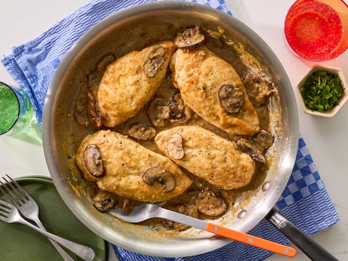

Home
Chicken Marsala

Description
Chicken Marsala is an Italian-style recipe for tender pan-fried chicken breasts in a sweet Marsala wine and
mushroom sauce. It's super quick and easy to make for a weeknight dinner and sophisticated enough for company.
Chicken Marsala is a classic dish loaded with rich, meaty, and herbaceous flavor. A luscious mushroom wine sauce
coats fried chicken breast for an unrivaled taste of Italian-inspired goodness. This mouthwatering recipe
transforms common pantry ingredients into a show-stopping meal. Learn how to make the best Chicken Marsala right
here.
Ingredients
- Flour
- Salt
- Black Pepper
- Dried Oregano
- Chicken breast
- Butter
- Olive oil
- Mushrooms
- Marsala wine
- Sherry
Steps
- Gather all ingredients.
- In a shallow dish or bowl, mix together the flour, salt, pepper and oregano.
- Coat chicken pieces in flour mixture.
- In a large skillet, melt butter in olive oil over medium heat. Place chicken in the pan, and lightly brown.
- Turn over chicken pieces, and add mushrooms. Pour in wine and sherry.
- Cover skillet; simmer chicken 10 minutes, turning once, until no longer pink and juices run clear.
- Serve hot and enjoy!